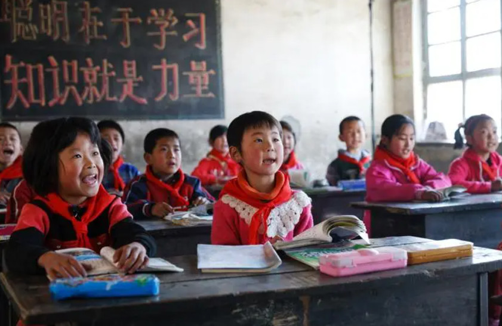
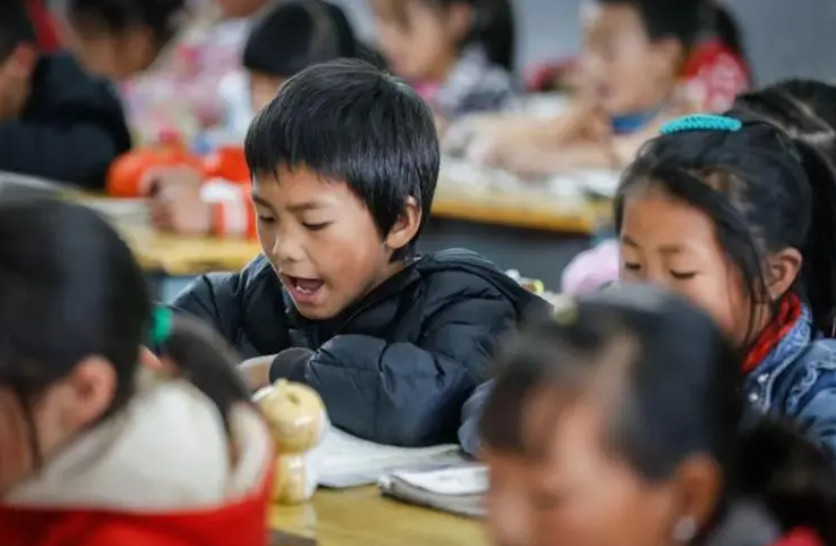
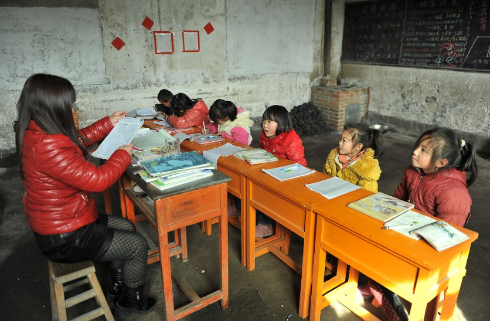

乡村教育
党的二十大报告指出，加快建设农业强国，要“扎实推动乡村产业、人才、文化、生态、组织振兴”。作为我国教育体系的重要组成部分，农村基础教育的发展直接关乎乡村振兴战略的实施，实现农村基础教育的高质量发展是乡村振兴的必然选择。然而，受体制、历史等多重因素的影响，我国农村基础教育仍然存在较多的发展困境。如何正确认识乡村振兴背景下农村基础教育发展的价值内蕴？乡村振兴背景下农村基础教育发展面临哪些困境？如何高效整合资源助力乡村基础教育振兴？这些问题需要我们认真思考和应对。
乡村振兴背景下农村基础教育的价值内蕴
进入新时代以来，党和政府高度重视农村基础教育发展，提出了一系列建设社会主义新农村的重要举措，加大了农村教育资源投入力度，努力缩小城乡教育差距，围绕着如何办好人民满意的教育，开启了乡村儿童从“有学上”到“上好学”的新发展阶段，农村基础教育改革取得了巨大的成就。乡村振兴战略对基础教育发展提出了更高的要求，同时也为农村基础教育的发展提供了一个新的契机，乡村振兴背景下的农村基础教育发展蕴含着重要的时代价值。
农村基础教育是乡村振兴文化传承的重要载体。在现代化快速发展的时代浪潮下，农村社会结构在悄无声息地发生变化，在观念层面上表现为外来文化的冲击与内在文化的质变，先进开放的观念传入农村的同时，以快餐式、市场化、娱乐至上等为代表的消极文化打破了封闭的农村文化环境，攀比之风、浪费之风等不良风气在农村愈演愈烈，破坏了农村原有的淳朴习俗，阻碍了乡村振兴的实现。乡村基础教育作为乡村文化传承的重要载体，可以吸取外来文化的精华，与时俱进、内外结合，构建兼具现代性与乡土性的农村教育氛围。通过引导、教化、规制等手段，帮助广大农村青年自觉革除陋习，树立良好的精神风貌，增强其对美好生活的向往，振奋精神、激发动力，为乡村振兴工作保驾护航、立根铸魂，为农村实现共同富裕提供精神支撑。
农村基础教育是乡村振兴人才培养的有效途径。《中共中央国务院关于做好2023年全面推进乡村振兴重点工作的意见》中指出，人才是实现乡村振兴发展的原动力，要加强乡村人才队伍建设，实施乡村振兴人才支持计划，积极推动县域内义务教育优质均衡发展，提升农村学校办学水平，挖掘农村内部人力资源，发挥农民参与乡村振兴的积极性、主动性、创造性。乡村振兴的最终目的是满足广大农民对美好生活的热切追求，因此必须紧紧依靠全体农民，从广大农民对共同富裕的热切期盼中汲取力量，充分发挥农民的内生动力。作为乡村振兴人才培养的有效途径，农村基础教育的对象是广大农村青少年，他们是乡村振兴的受益者和建设者，通过价值引导、知识更新等途径，将乡村振兴与个人发展紧密结合，激发他们建设家乡的热情，为其投入乡村振兴事业打下情感基础。
发展农村基础教育能够为乡村振兴提供力量源泉。乡村振兴是一个系统性的工程，其基本内涵囊括了经济、文化、生态、民生、治理等多个层面，本质在于农村农业的现代化，农村农业的现代化需要靠人的现代化才能实现，然而如果没有教育的现代化，就没有人的现代化。教育，尤其是基础教育是乡村振兴的逻辑起点。农村基础教育通过培育新时期乡土人才、传承农村优秀文化，从而推动乡土社会的整体性变革。
乡村振兴背景下农村基础教育发展的现实困境
农村基础教育资源不足。与城市相比，现有的教育资源难以满足农村基础教育的发展需求。究其原因，来自两个方面：第一，当前农村基础教育资源分布较为分散，没有得到整合利用。分散的教育资源带来的一个重要局限就是教育经费不能得到集约化使用，需求单位多、需求量大的现实状况使得本来就有限的教育投入变得更为紧缺。第二，农村教学资源获取渠道狭窄，现有资源利用有限。以义务教育阶段为例，根据教育部《2020中国教育概况——2020年全国教育事业发展情况》公布的数据，全国小学生人均教学仪器设备值为1809元，城市小学人均教学仪器设备值为1967元，农村小学人均教学仪器设备值为1652元，仅为城市小学的80.4%，而初中生人均教学仪器农村更是仅为城市的77%。由此可见，全国义务教育阶段教学仪器设备配置水平城乡差距依然较大。信息化是现代教育的重要标志，我国农村小学与初中建立校园网的学校比例为67.3%和74.1%，比同一时期城市小学与初中低17.2个百分点和12.6个百分点。此外，在一些边远山区，由于交通、物流等基础设施情况较差，获取外来教育资源的成本较高，影响了农村基础教育的发展。
农村基础教育师资队伍建设滞后。优质的师资是农村基础教育发展的重要前提。当前我国农村基础教育师资队伍建设存在数量不足、教学水平有限等现实困境。第一，农村基础教育师资年龄结构失衡。相比于城市，农村地区地理位置偏僻、福利待遇较低、职业晋升渠道狭窄，许多毕业的大学生不愿意前往农村任教，农村师资以中老年教师为主，缺乏青年教师。第二，农村专任教师流失现象严重。农村基础教育发展存在着“引不来、留不住、升不了”的尴尬局面。如今，专任教师流失已经成为阻碍农村基础教育发展的重要因素。第三，农村基础教育师资素质参差不齐，教学质量相对较低。许多农村教师学历并不高，再加上农村地区中老年教师比例高，在一定程度上不能及时传递先进的教育理念，教学方法落后，重视成绩而忽视学生的全面发展，授课效果也受到了一定的影响。
农村生源流失严重。根据教育部《2020中国教育概况——2020年全国教育事业发展情况》公布的数据，仅2020年全国义务教育阶段进城务工人员随迁子女便达到了1429.7万人，较上一年增加2.8万人，占在校生人数的9.1%，且呈现出人数逐年增长的趋势。再加上当下农村地区老龄化现象日益严重，人口出生率逐年降低，农村生源严重缩减，农村基础教育呈现出有供而无求的局面。其根本原因在于城乡教育资源的差异。在应然层面上，农村基础教育常常被赋予促进农村经济社会发展的重要使命，然而从现实来看，广大的农村家庭则寄希望通过教育从而实现孩子的“离土离乡”，城乡二元体制下的“非城即乡”已经成为农村家庭及其子女在教育上必须面临的一道选择题。
农村留守儿童问题突出。伴随着城市化的快速发展，大量的农村剩余劳动力涌向城市，形成了一支庞大的“农村留守儿童队伍”。以劳务输出大省河南省为例，2022年河南省义务教育阶段农村留守在校生达到了143.75万人，占义务教育阶段在校生总数的9.71%，其中，小学生94.26万人，初中生49.49万人。留守儿童因其数量庞大和教育问题突出而受到社会广泛关注。有研究发现，当前我国农村留守儿童教育主要面临四个方面的危机：一是辍学概率较高。由于缺乏父母的关爱，加上农村教师对于留守儿童学习重视程度低，很多农村留守儿童学习动力不足、教育认知错位，逐渐产生了厌学心理，最终走上了辍学的不归之路。二是心理问题较为突出。农村留守儿童大多是由他们的爷爷奶奶、外公外婆等隔代亲属代为照顾，这种隔代教育不能代替来自父母的关爱，在其产生心理问题时不能及时进行正确的情绪疏导，导致留守儿童常常出现负面甚至是逆反心理。三是道德培养缺失。农村基础教育以升学为导向，关注成绩而忽视学生的道德品质培养，同时农村留守儿童容易受到不良环境的影响，使得部分农村留守儿童的责任意识、法律观念、感恩意识等较为缺乏。四是安全问题不容忽视。农村留守儿童的安全教育极为匮乏，许多农村教师将学生的安全问题仅仅看作是其监护人的责任，加上农村留守儿童本身的自我防范与保护意识不强，因此，关于农村留守儿童的一些不良事件屡见不鲜，这对农村基础教育敲响了警钟。
乡村振兴背景下农村基础教育发展的可行性路径
资源整合，改善农村基础教育环境。首先，要进一步优化农村学校布局，避免教育资源浪费。因地制宜，综合考虑区位因素、文化环境、人口状况等，对邻近的农村学校进行撤销与合并，对于教学资源中校舍、桌椅、书本、教具、多媒体等可重复利用的教学资源，要坚持节流整合的策略，定期进行维护和修理，提高教学资源的重复利用率。其次，加大农村基础教育经费的投入力度，完善经费使用机制。在经费来源方面，政府要加大对农村基础教育投资的力度，合理分配基础教育经费，提高学校的经费使用自主权，完善对学校经费使用的监督机制，以实现教育经费的高效利用。同时，要进一步拓宽农村基础教育经费的来源渠道，提高慈善机构与社会组织对农村基础教育的关注度，可以通过现金捐赠、物资供给、对口援助、慈善义卖等多元方式获取资源。再其次，要重点关注农村学校的教育信息化水平，改善农村基础教育的发展环境，加大对农村学校计算机、互联网、校园网、电子白板、网上图书馆等数字化设施的投入力度，联合高校、图书馆、科研机构等单位为农村孩子开发丰富的网上课程资源，消除农村学生的数字鸿沟，从而实现受教育者随时随地自主学习。
优化农村师资结构，推动农村师资高质量发展。第一，要调动师范高校教育资源，使农村学校成为“引得来”教师的地方。鼓励青年教师扎根农村基础教育，明确其在农村基础教育的重要地位，形成尊师、爱师、崇师的良好社会氛围。第二，要提高农村教师的基本工资和待遇水平，使农村学校成为“留得住”教师的地方。增强对农村教师的政策倾斜力度，完善他们在住房、医疗、子女教育、养老等方面的保障体系，确保他们在衣食住行方面没有后顾之忧。对于偏远地区的农村教师，要加大补贴力度，合理安排教学任务，避免一师多岗现象的出现。第三，要优化职称评价体系，使农村学校成为教师们“升得上”的地方。基于乡村振兴的战略背景，在保证公平性的前提下，鼓励各地因地制宜制定差异化、多元化的评价体系，破除“唯论文论”“唯分数论”“唯升学率”等固化标准。此外，还要加大农村师资的培训力度，提高教学质量。通过开展在岗培训、教学技能大赛、城乡教师交流等多种途径，提升农村教师的理论水平与教学技能，从而打造高质量的农村师资队伍。
加快农村现代化建设步伐，留住本土生源。以乡村振兴为契机，加快农村现代化建设的步伐，实现经济发展与教育发展的协同共进。一方面，要完善农村产业发展格局。产业兴旺作为实现乡村振兴的首要任务，对于缩小城乡贫富差距、改善农村居民的生活水平、提高农业农村现代化进程都具有重要的现实意义。只有通过农村产业发展，才能够留住和吸引更多的农村生源“学在农村，建设农村”。另一方面，要积极传播乡土文化，加强农村生源的文化自信。农村教育植根于乡村，因此要进一步挖掘乡土文化资源，创新乡土教育课程，使农村教育回归“乡土本质”，增强农村生源的乡土情怀。
打造家校社协同关爱机制，加强对农村留守儿童的教育。应该充分发挥家庭、学校、社会三者的作用，实现家校社之间的互联互通，协同发力。首先，要强化家庭教育的责任。家庭教育对于孩子成长的重要性至关重要，妇联、团委等有关部门应该主动关注农村留守儿童群体，引导家长积极履行教育职责，搭建平台，依托现代化的信息技术促进农村留守儿童同其父母的沟通联系。其次，学校要积极承担起教育责任，适当扩大寄宿制，通过集体生活减少留守儿童的孤寂感，配备专业的心理辅导老师，开设心理健康课程，培养正确的人生观、世界观和优良的道德品质，加强农村留守儿童的安全教育，配合家庭、社区做好留守儿童的安全保障工作。再其次，要整合社会力量，为农村留守儿童提供健康良好的成长氛围。